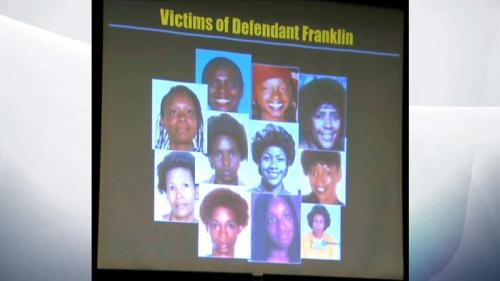

美国连环杀手奸杀10人 逍遥法外30年终被定罪
据CNN5月6日报道，美国洛杉矶被称为“冷酷沉睡者”（Grim Sleeper）的连环杀手逍遥法外30年后，终于在5月5日以10起谋杀、1起谋杀未遂被定罪。对他最终的裁定将在5月11日进行，法庭将决定是否处以死刑。该连环杀手名为Lonnie David FranklinJr，现年63岁，曾在洛杉矶警局停车场做过清洁工。
该连环杀手被称作“冷酷沉睡者”
嫌犯被指控在1985年至2007年期间，涉嫌奸杀10名女性，其中包括一名15岁的少女。据报道，受害人均为经济困顿的年轻黑人女性。另外，他也涉嫌谋杀第11名受害者，但受害者死里逃生，在遭到性侵、中枪以及被推出轿车后，奇迹般地存活了下来。

被害者均为年轻黑人女性
检察官称，受害者多先遭到性侵，之后在胸口中枪死亡或被勒死，再被装进垃圾袋中。另外，警方表示，嫌犯还在家中收藏了疑似为受害者的照片，推断是性侵后留给自己的纪念品。
据报道，宣判罪行时，FranklinJr面无表情，毫无任何反应。
此案件拖延已久，警方一直无法查出这个当时恶名昭彰的“冷酷沉睡者”，甚至数度抓错人。但因嫌犯儿子6年前曾因案入狱，让警方有了意外的收获，据了解，警方因在采集嫌犯儿子DNA时，意外发现他与嫌犯有血缘关系，最终因为这DNA证据得以将嫌犯逮捕归案。